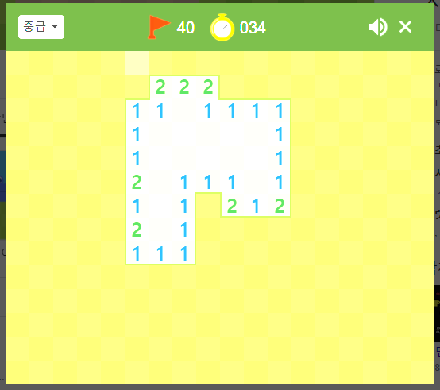

이번 시간에는 저번에 만들었던 콘솔버전 지뢰찾기를 바탕으로 윈도우 버전으로 만들어볼건데,
사실 크게 차이는 없고 그냥 보이는게 콘솔의 글씨로 보이느냐, 아니면 윈도우의 창으로 보이느냐 하는 차이만 있을뿐이야.
지뢰찾기의 내부적인 로직은 어차피 그대로이고 디자인만 달아진다는 말이지.
파이썬을 이용해서 윈도우를 어떻게 만들면 될까?
알아보니까 pyqt 라는 모듈이 많이 사용된다고 하네? 하지만 이번에는 복잡한 기능을 사용하지 않기 때문에 python 에 기본적으로 있는 tkinter 라는 모듈을 이용해볼거야.
간단하게 윈도우 창을 하나 만들어볼까?
# tkinter 로 윈도우 창 만들기
import tkinter
window = tkinter.Tk()
window.mainloop()
위 코드를 실행하면 창이 하나 만들어질꺼야. 참고로 tkinter 를 사용하는 것은 나도 처음이기 때문에 아래 링크를 참고했어.출처
tkinter.Tk() 를 하면 윈도우 창을 만들어 주고 mainloop 를 호출해야 그 윈도우 창이 활성화되는 원리 인 것 같아.
tkinter 라는 모듈을 사용하기 때문에 내부적인 복잡한 구현은 신경쓰지 않아도 간단하게 윈도우 창을 만들 수 있었지? 이게 모듈의 장점이야.
만들어진 윈도우 창의 길이를 우리가 직접 늘렸다/줄였다 할 수 있는데 처음에 창을 만들 때 부터 원하는 크기로 고정하고 싶으면 어떻게 해야할까?
역시 위 출처 링크에서 찾아보았는데 아래와 같이 할 수 있었어.
# tkinter 로 윈도우 창 크기 고정 및 타이틀 변경
import tkinter
window = tkinter.Tk()
window.title("MineSweeper") # 프로그램의 이름
window.geometry("540x480") # 윈도우 창의 크기 지정
window.resizable(False, False) # 윈도우 창 크기 고정
window.mainloop()
이제 창 크기가 고정되었고 프로그램의 이름도 잘 지정되었어. 참고로 크기는 구글의 지뢰찾기 게임 크기를 그대로 가져온거야.
이제 저 창 안에다 지뢰찾기 게임처럼 버튼들을 배치하면 되는데 그 전에 디자인에 대한 배경지식을 알아보자.
이 디자인은 윈도우에 국한되는 것이 아니라 웹 사이트나 스마트폰의 앱 디자인 과도 비슷한 면이 있는데,
결국 디자인은 여러 요소 ( element ) 들의 집합에 지나지 않는 다는 것 이야. 여기서 말하는 element 는 버튼, 글씨, 그림, 표 같은 것인데, ( 모든 것들이 요소야 )
웹 사이트에서 F12 를 눌러 개발자도구를 열면 웹이 어떻게 디자인 되어 있는지를 볼 수 있는데 직접 설명해주겠지만 웹도 결국엔 요소들을 예쁘게 배치한 것에 지나지 않는 다는 것이지.
지뢰찾기에는 어떤 요소들이 있을까?

우선 칸(셀) 이라는 요소가 있지. 이 칸은 클릭을 했을 때 반응해야 하니까 일종의 버튼인거고, 그 위에 띠 요소가 있고,
띠의 왼쪽에는 초급, 중급, 고급을 선택할 수 있는 요소가 있고, 그 오른쪽에는 깃발이미지 요소가 있고 그 오른쪽에는 깃발의 숫자를 의미하는 텍스트 요소가 있고, 그 오른쪽에는 시계 이미지 요소가 있고, 그 오른쪽에는 지난 시간을 의미하는 숫자 텍스트 요소가 있고 그 오른쪽에는 소리를 컨트롤 할 수 있는 버튼요소가 있네.
즉, 디자인 요소라는 것은, 다시한번 말하지만 글씨, 이미지, 버튼, 띠 같은 모든 것들이 요소라는 거야.
그러면 이제 각 요소를 만들어서 알맞은 위치에 배치하면 디자인은 끝난다는 것이지.
그러면 tkinter 에서 사용할 수 있는 요소는 뭐가 있을까?
위 링크를 들어가 보면 알겠지만, 라벨, 버튼, 리스트박스, 체크버튼, 라디오버튼, 메뉴, 메뉴버튼, 캔버스, 스크롤바, 등등... 다양한 디자인 요소들이 있는 것을 볼 수 있어.
하나하나 설명하기에는 시간이 걸리기 때문에 label 과 button 2개 요소를 먼저 알아보자.
# 라벨 활용
import tkinter
window = tkinter.Tk()
window.title("MineSweeper") # 프로그램의 이름
window.geometry("540x480") # 윈도우 창의 크기 지정
window.resizable(False, False) # 윈도우 창 크기 고정
label_1 = tkinter.Label(window, text="테스트문자열 ( 100, 100 )")
label_1.place(x=200, y=200)
label_2 = tkinter.Label(window, text="테스트문자열 ( 100, 0 )")
label_2.place(x=100, y=0)
label_3 = tkinter.Label(window, text="테스트문자열 ( 0, 100 )")
label_3.place(x=0, y=100)
window.mainloop()
tkinter 모듈에 있는 Label 이라는 요소니까 tkinter.Label 를 이용해 인스턴스를 생성해보자.
매개변수로 window 와 text 가 들어가있는데 첫 번째 매개변수는 label 요소의 부모요소가 window 라는 뜻이고 text 는 말그대로 이요소의 text 를 써준거야.
부모요소가 뭐냐고..? 디자인은 결국 요소의 배치라고 했었지? 이 요소를 배치할 때 편리하게 하기 위해서 일종의 기준을 잡는 것인데,
예를 들어 좌표평면에서는 "원점" 이 기준이 되잖아? 요소들을 배치할 때 요소의 좌표라던가 상대적인 위치로 배치를 하게 되는데,
요소를 좌표로 배치한다고 할 때 어떤 요소를 원점으로 할 것인지가 중요하다는 것이지. 같은 (0,0) 의 위치에 있더라도 누가 기준이냐에 따라서 디자인이 달라진다는 말이지.
label 요소의 부모요소는 window 니까 window 의 위치가 원점이 되는 건데, window 의 위치는 창의 좌상단 이므로 위와 같은 배치가 나오는 것이지.
요소의 인스턴스를 만든다고 해서 배치가 자동으로 되는 것이 아니야. 요소에 대해 place 라는 함수를 호출해줘야 비로소 배치가 되는 것이지. place 의 두 개의 x, y 매개변수가 주어진게 보이지?
이제 부모요소를 기준으로 저 좌표에 label 요소가 place 되는 거야. 생각해보면 간단한거야.
그러면 저 label 을 이용하면 지뢰찾기에 있는 깃발수와 타이머수를 묘사 할 수가 있는 것이지.
또 label 의 배경색이나 크기도 변경할 수가 있어. 배경색을 지정하거나 요소의 크기를 변경하는 것은 사실 라벨만의 특성이 아니라 모든 요소들이 가지고 있는 것인데,
다른 요소들을 대신 사용해도 되지만 label 를 사용해도 전혀 상관없으므로 label 로 지뢰찾기의 띠 같은 것을 디자인 했어.
# 띠 디자인
import tkinter
window = tkinter.Tk()
window.title("MineSweeper") # 프로그램의 이름
window.geometry("540x480") # 윈도우 창의 크기 지정
window.resizable(False, False) # 윈도우 창 크기 고정
label = tkinter.Label(window, background="#4a752c")
label.place(x=0, y=0, width=540, height=60)
window.mainloop()
이제 본격적으로 지뢰찾기를 디자인해보자. 버튼의 색깔을 직접 색을 바꿔주면 되고, 필요한 이미지는 일단 이 2개만 있으면 될 것 같네.
다시 한 번 정리해보자. 지뢰찾기에는 어떤 요소들이 필요할지.
1~8 모두 요소들이고 배치되어야 하기 때문에 코딩을 위해서 각자 제대로 된 이름이 있어야해서 이름도 같이 붙여봤어.
이름의 맨 끝에는 어떤 종류의 element 인지 알기 쉽도록 같이 썼어.
음... 내가 직접 만들어보면서 깨달은 건데, 나도 이번에 tkinter 를 처음써보다보니까.
요소 위에다 요소를 배치하면 이전에 배치된 요소를 가려버리는 문제가 있더라고. 근데 지금 띠 위에다가 깃발과 시계 이미지를 올려야 되잖아?
그래서 구글링결과 캔버스 요소를 이용해야한다는 것을 알았어. 캔버스를 쓰면서 추가된 부분은 설명을 다시 해줄테니까 걱정하지 마.
# 띠 이미지 배치
import tkinter
from PIL import Image, ImageTk
window = tkinter.Tk()
window.title("MineSweeper") # 프로그램의 이름
window.geometry("540x480") # 윈도우 창의 크기 지정
window.resizable(False, False) # 윈도우 창 크기 고정
band_canvas = tkinter.Canvas(window, background="#4a752c")
band_canvas.place(x=0, y=0, width=540, height=60)
clock_image = Image.open("clock_icon.png")
clock_image = clock_image.resize((38, 38), Image.ANTIALIAS)
clock_image = ImageTk.PhotoImage(clock_image)
band_canvas.create_image(273, 30, image=clock_image)
flag_image = Image.open("flag_icon.png")
flag_image = flag_image.resize((38, 38), Image.ANTIALIAS)
flag_image = ImageTk.PhotoImage(flag_image)
band_canvas.create_image(193, 30, image=flag_image)
window.mainloop()
우선은 간단하게 캔버스를 이용해서 초록색띠와 시계, 깃발 이미지를 배치했어.
이제 레벨을 선택할 수 있는 선택창 같은 것을 만들어야 하는데 리스트 박스로 해볼려고 했는데 디자인이 생각보다 별로더라고.
그래서 라디오버튼을 이용해서 디자인해보자.